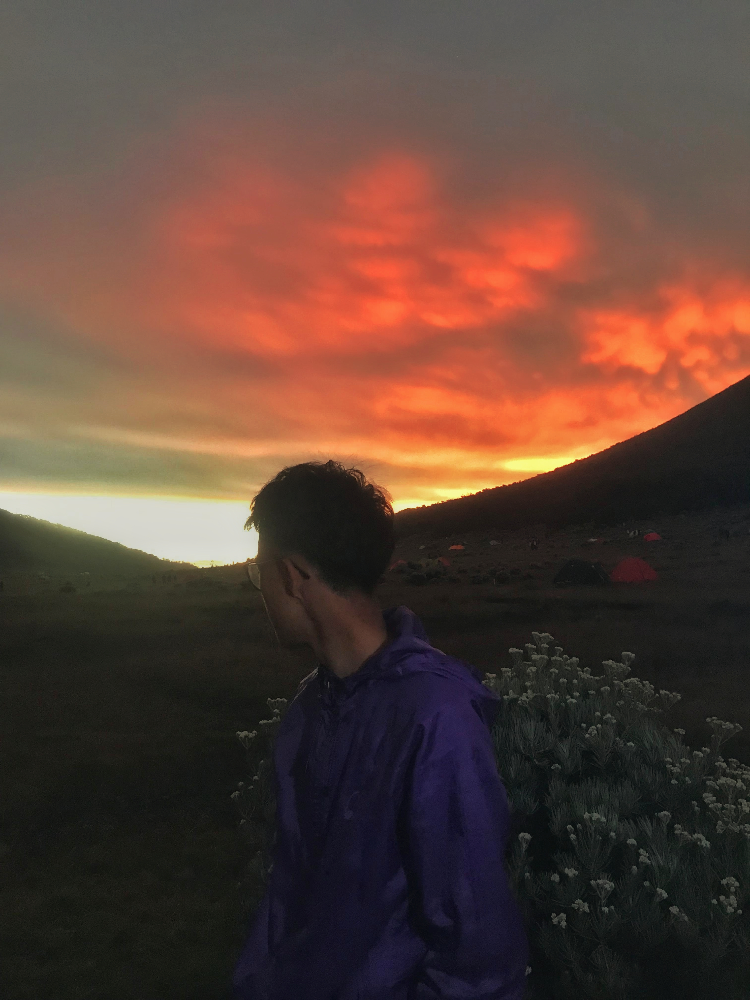
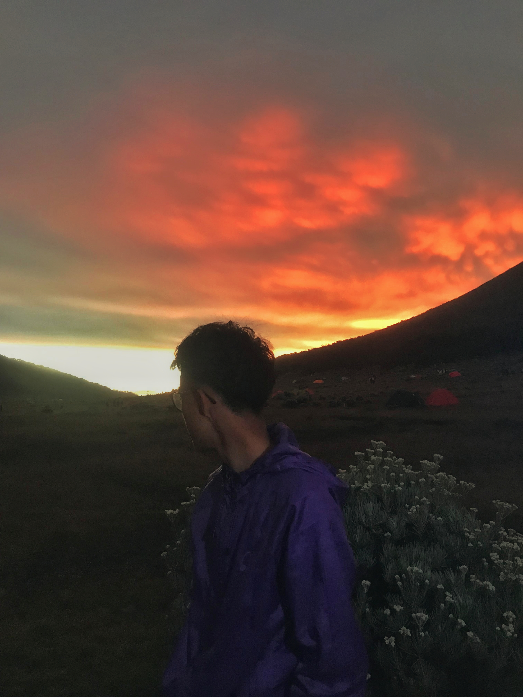
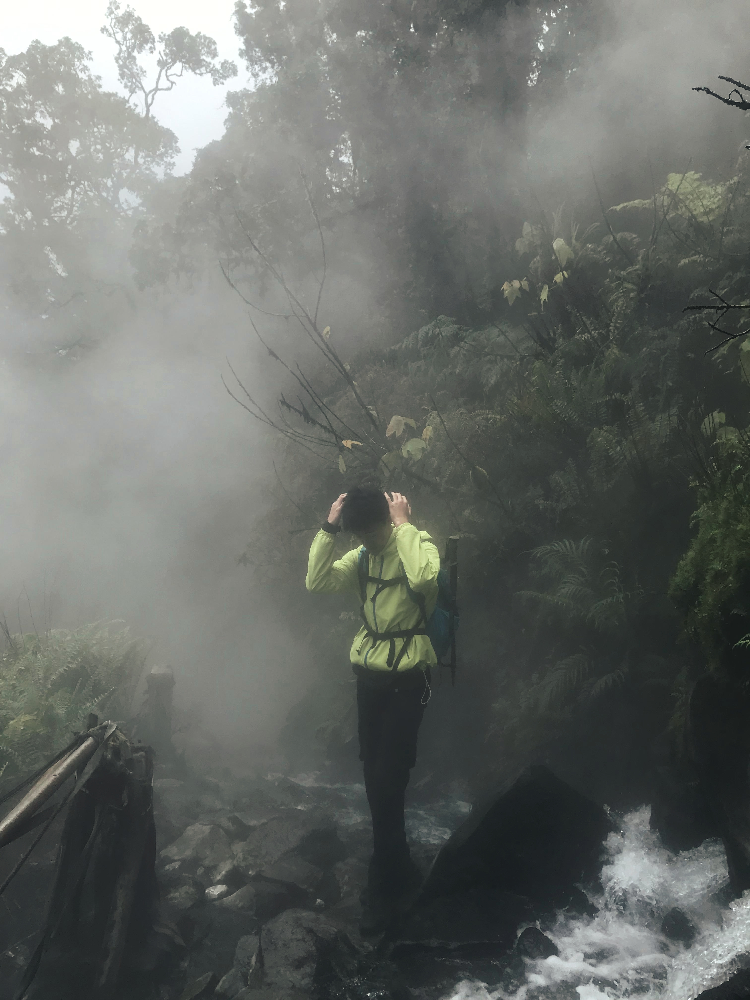
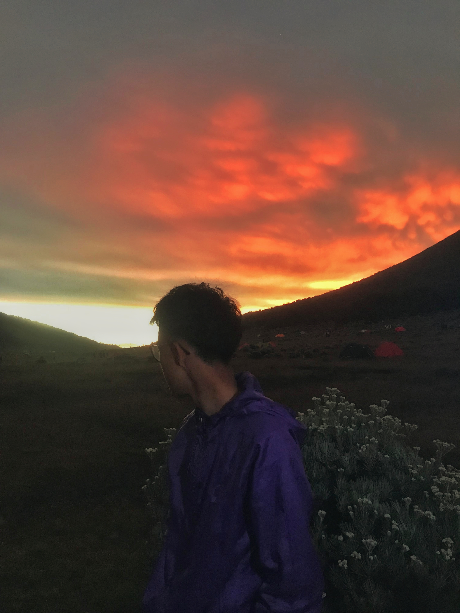
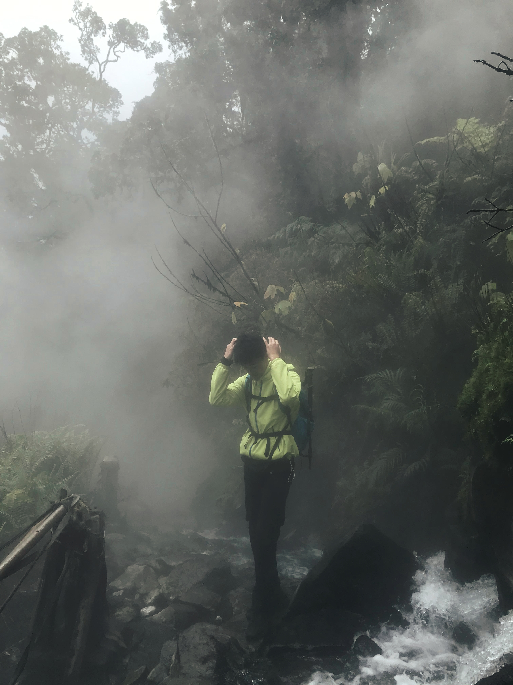
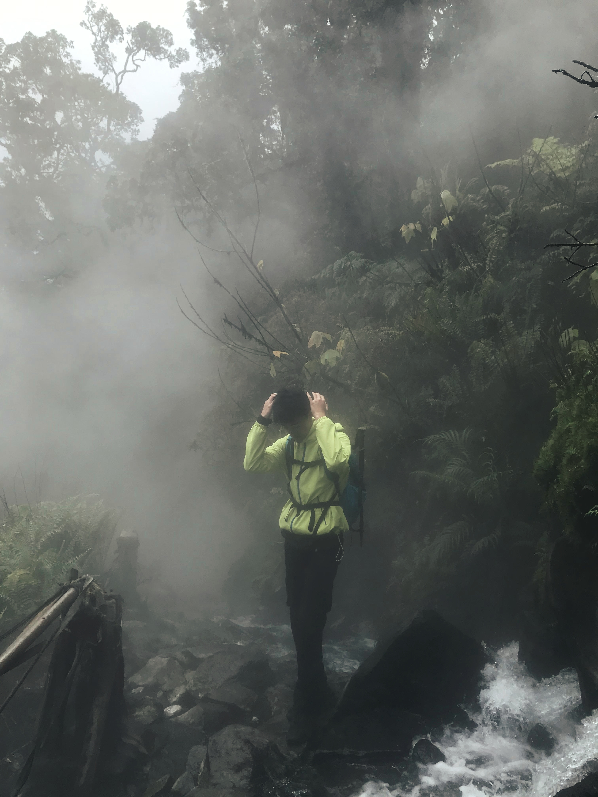
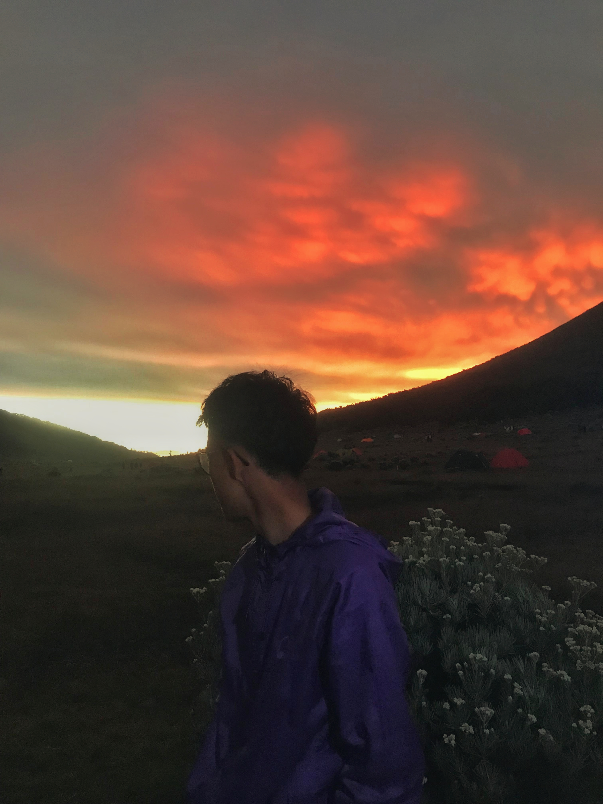
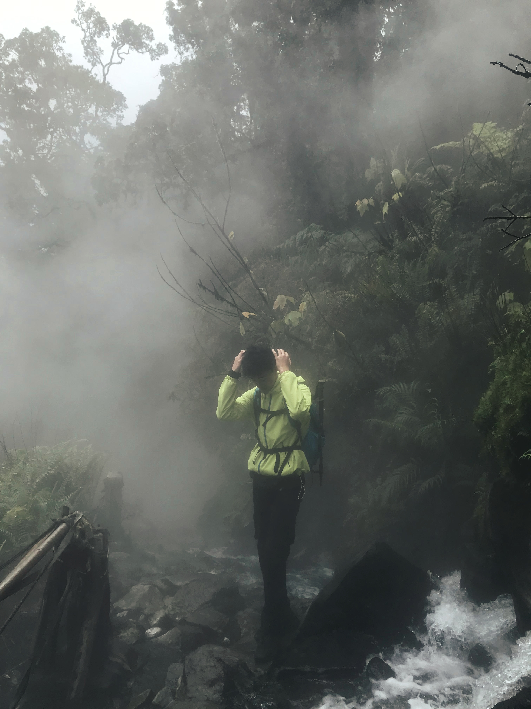

 





Saya ingin menjelaskan secara tegas tujuan saya. Saya adalah seseorang yang tidak meyakini kekuatan slogan semata.
Patriotisme sejati tidak mungkin tumbuh dari kepalsuan dan jargon belaka. Rasa cinta terhadap sesuatu hanya dapat tumbuh dengan sehat apabila seseorang benar-benar mengenal objek yang dicintainya. Demikian pula, rasa cinta terhadap tanah air Indonesia harus dibangun melalui pemahaman yang mendalam terhadap negeri ini beserta rakyatnya, secara langsung dan dekat.
Pertumbuhan jiwa yang sehat dalam diri seorang pemuda hendaknya juga disertai dengan pertumbuhan fisik yang selaras.
Inilah alasan saya mendaki gunung.
Email: sfahrejaahmad@gmail.com
Instagram: @abcdejaaaa___